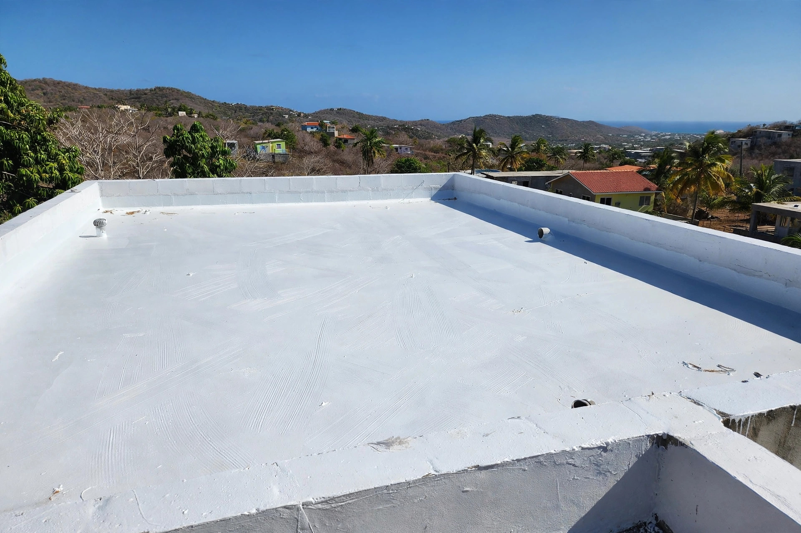
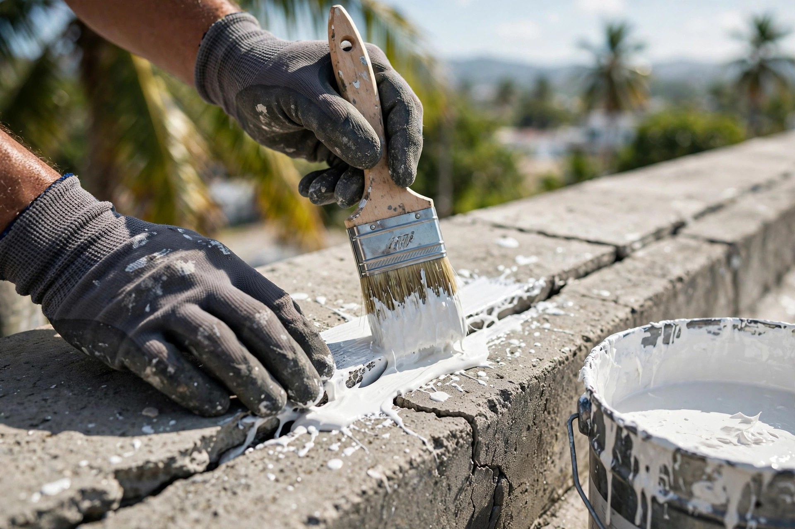
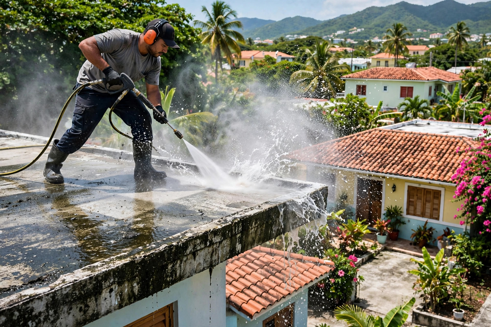
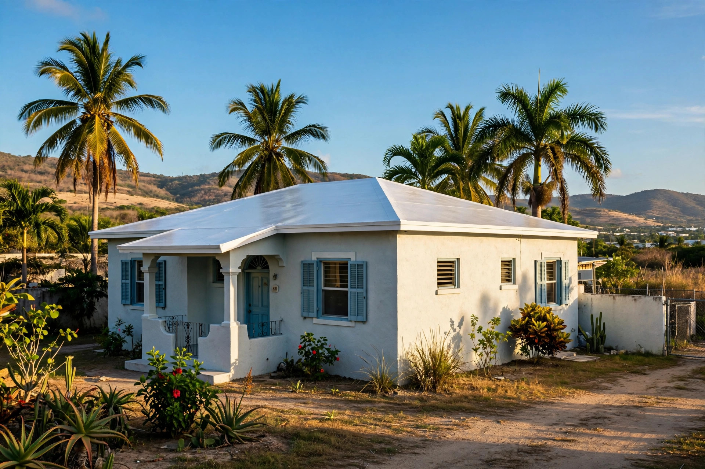
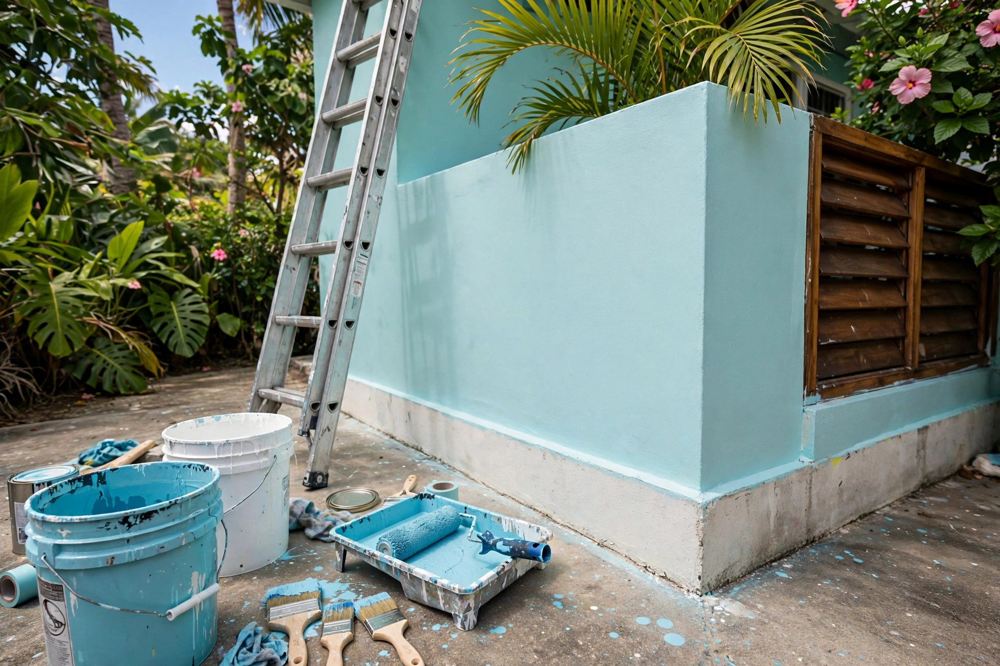

Sellado de techos, pintura exterior e interior y reparaciones. Trabajo serio del área sur, a la hora que nos necesites.
Pintura, sellado y construcción: así queda cuando se hace bien.





Pintura y construcción en el sur de Puerto Rico: del techo a la pared, lo dejamos nuevo.
Impermeabilización para el calor y la lluvia del sur.
Fachadas y paredes con acabado parejo y duradero.
Proyectos de construcción y mejoras en el hogar.
Grietas, filtraciones y detalles que otros dejan.
Preparación profunda antes de pintar o sellar.
Escríbenos a cualquier hora, coordinamos tu visita.
Trabajo serio, trato directo y resultados que se ven.
Servimos el sur de Puerto Rico: llegamos donde nos necesites.
Nos escribes cuando puedas y coordinamos el trabajo.
Un solo equipo para el techo, la pared y la reparación.
Cotización por WhatsApp al 939-267-1517.
Lo que todo dueño de casa pregunta antes de pintar o sellar.
Depende del sistema aplicado y la exposición al sol y la lluvia del sur. Lo ideal es una revisión antes de la temporada de lluvia para decidir si toca mantenimiento.
Sí. Primero se corrigen las grietas y los puntos donde se empoza el agua, y luego se aplica el sellado para que quede parejo.
Sí, el lavado a presión es parte de la preparación: deja la superficie limpia para que la pintura o el sellador pegue bien.
Por WhatsApp al 939-267-1517: envíanos fotos del techo o la pared y te respondemos. Trabajamos el área sur.
Sí, nos puedes escribir o llamar a cualquier hora. Coordinamos la visita según tu horario.
Esta página la creó ManuPro. Escríbenos hoy mismo y cotiza la website profesional de tu negocio.
Cotizar por WhatsApp